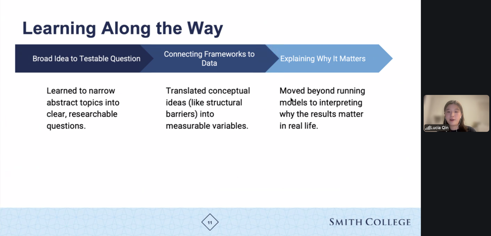

SDS Newsletter
Please help us reach out to other alumnae by having them contact Ben (bbaumer@smith.edu)!
Program Updates
- Lucia Qin ’26 shared her learning experience as a student research assistant in the invited panel “Teamwork Makes the Dream Work: Leveraging Different Approaches to Learn from Data” at the Women in Statistics and Data Science Conference (WSDS) 2025 virtually.

Previous Updates
Faculty Updates
Ben Baumer
I’m working on a couple of papers with recent alums:
- Everyone Watches Women’s Basketball: Attendance and Fan Engagement in the WNBA with Gabriela Eastwood ’26. This paper stems from a research paper that Gabriela wrote for my SDS 355 Sports Analytics class in the fall.
- Reward systems in sports: Who’s the fairest of them all? with Sarah Susnea ’25. This is ongoing work that started during our Pedagogical Partnership for the SDS capstone.
I’m also working on a couple of papers in the data science education space about first and second courses in data science.
I’m gearing up for another 1.5 years as SDS chair, and looking forward to JSM in Boston. Hope to see you there!
In other news, I coached Alice’s 12U softball team and we won the Massachusetts District 2 championship!!

Gillian Beltz-Mohrmann
Shiya Cao
Year 4 at Smith was a productive year. I am grateful for my pre-tenure sabbatical in Fall 2025. The focus of my sabbatical was taking up the Visiting Fellow position at the Yang-Tan Institute (YTI) on Employment and Disability in the School of Industrial and Labor Relations at Cornell University. During this fellowship, I worked on and submitted one peer-reviewed journal paper, delivered an invited lecture, built collaborative research opportunities with YTI faculty. Furthermore, the sabbatical allowed me to make progress on several other research projects:
published two peer-reviewed journal papers co-authored with students:
- Educational Opportunities of Participatory GIS for Accessibility on a College Campus with Heather Rosenfeld and Sarah Susnea ’25
- Examining the Intersectional and Structural Issues of Routine Healthcare Utilization and Access Inequities for LGB People with Chronic Diseases with Mehreen Merza ’25, Sophia Silovsky ’24, Nicole Tresvalles ’24, Lucia Qin ’26, and Sarah Susnea ’25. This paper stems from a project paper Mehreen Merza ’25, Sophia Silovsky ’24, and Nicole Tresvalles ’24 wrote for my SDS 300: Disability Inclusion and Data Analytics in Fall 2023
published one peer-reviewed American Statistical Association (ASA) Chance magazine paper on A Review of Research and Practices on Teaching Data Visualizations for Blind and Visually Impaired Students
applied for the American Council of Learned Societies (ACLS) Digital Justice Seed Grants with Heather Rosenfeld for our comprehensive and participatory campus accessibility maps project. Our application received positive feedback during the first round of review and advanced to the second round of evaluation, although not funded
The latest news of my research is that the data package tripaccess 0.1.0: American Travel Behavior and Access Datasets is now available on CRAN. I worked with Amber Zhang ’27 and Anna Zhao ’27 on this data package this summer. Please check out the package site for more information!
I was also excited to be back in Spring 2026 (to be honest, a little overwhelmed for the first half of the semester as I adjusted to being back) to teach SDS 192: Introduction to Data Science and SDS 300: Disability Inclusion and Data Analytics. During the semester, I participated in the ASA Justice, Equity, Diversity, and Inclusion Outreach Group-Reading/Working Group (this group provided valuable feedback on my data package–thanks for that!). The materials we read in the group made me think more deeply about my pedagogy while I was teaching and learning alongside my students. It turned out to be a rewarding semester. Now I am really looking forward to next semester, teaching SDS 192 and SDS 270: Programming for Data Science in R and working with my student pedagogical partner Tanisha Chetty ’27 on issues around GenAI in SDS 270.
In 2026, I started running and swimming regularly (absolute beginner level)–adding more cardio to my workouts!
Dusty Christensen
Kaitlyn Cook
Randi Garcia
Will Hopper
Albert Y. Kim
Sara Kirshbaum
Katherine M. Kinnaird
Rebecca Kurtz-Garcia
Ab Mosca ’14
Lindsay Poirier
Nikko Stevens
Kementari Whitcher
Alumni Updates
- Alumni updates will be added HERE
What’s next?
Joint Statistical Meetings
Many of us will be at the 2026 Joint Statistical Meetings during the first week of August in BOSTON!.
Don’t miss these events featuring Smithies and current faculty!
Join us for the Smith JSM get together:
- Boqueria Seaport
25 Thomson Pl
Boston, MA 02210
Monday, August 3rd
7 - 8:30 p
We hope to see you there!